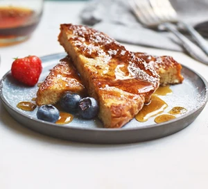

French toast

Eggy bread, pain perdu or French toast- this classic breakfast dish has plenty of names and just as many options for toppings. We like it with fresh berries.
Prep Time: 5 mins
Cook Time: 15 mins plus soaking
Serves 4
Ingredients
- 2 large eggs
- 80ml whole milk
- 40ml double cream
- 1 tsp vanilla extract
- ½ tsp cinnamon
- 4 thick slices brioche
- 2 tbsp vegetable oil
- 2 tbsp butter
- icing sugar and fresh berries, to serve (optional)
Method
- Whisk together the eggs, milk, cream, vanilla and cinnamon. Lay
the brioche slices in a single layer in a shallow dish and pour the
egg mixture over them. Allow to soak for 2-3 mins, then carefully
turn over and soak for 2 mins more.
- Heat 1 tbsp of the vegetable oil and butter in a non-stick frying
pan over a medium heat until foaming. Carefully lift 2 slices of the
soaked brioche out of the dish and add to the frying pan. Fry for 3
mins on each side, until golden and crisp, then place on a wire
rack over a baking tray in a warm oven while you repeat with the
remaining slices.
- Serve dusted in icing sugar and scattered with fresh berries, if
you like.
Nutritional Information: per serving
- Calories: 401 kcal
- Fat: 29g
- Saturated Fats: 12g
- Carbohydrates: 26g
- Sugars: 7g
- Fibre: 1g
- Protein: 9g
- Salt: 0.8g